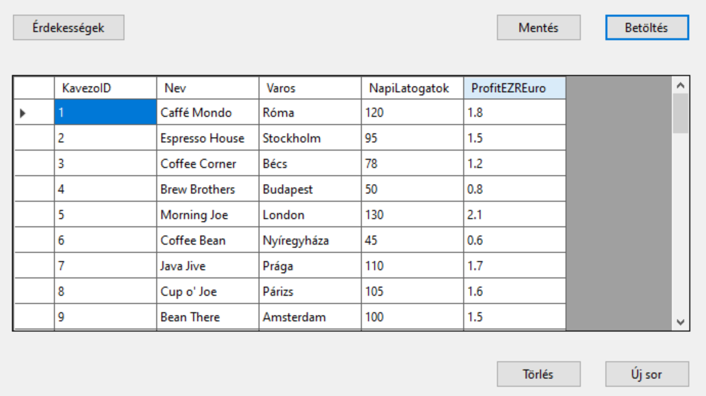
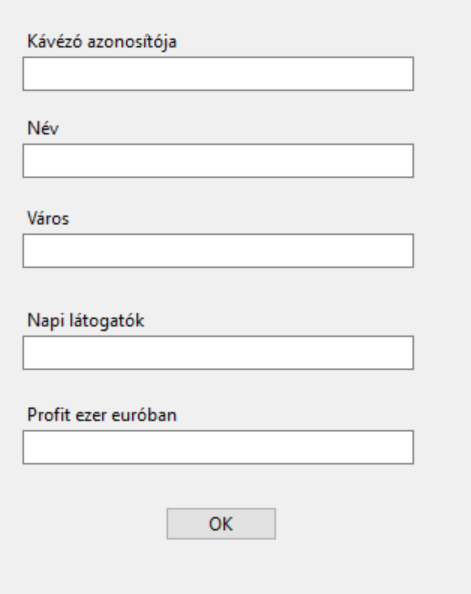
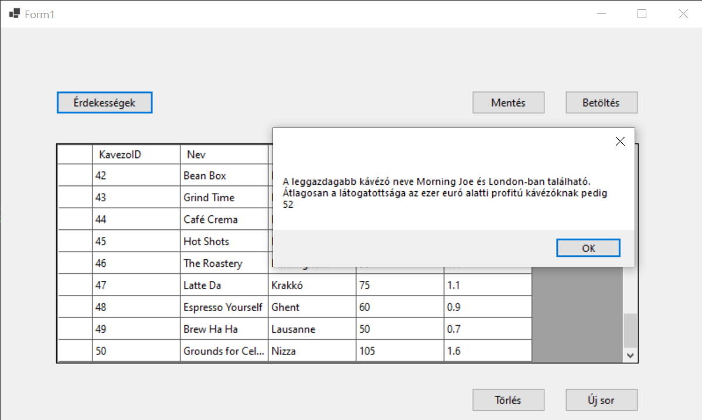

2. ZH - echo
Note
A Solution neve kezdődjön a ZH2E_ karaktersorozattal, majd folytatódjon a NEPTUN kóddal. A teljes projekt könyvtárat Moodle-rendszeren keresztül kell beadni ZIP állományban. Javasoljuk, hogy a projektet a C:/Temp könyvtárba hozd létre és ne az S: meghajtóra. A leadás egyben a jelenléti ív. Pontot csak olyan kódrészletre lehet kapni, ami megfelelően lefordul és a program futtatása során ellátja a szerepét. A munkaidő 90 perc.
🅐 UI keret létrehozása
❶ Hozz létre egy "Windows Forms App" alapú alkalmazást. Az induláskor megjelenő űrlap bal oldalán helyezz el négy gombot, és egy panelt!
❷ A Panel kerete legyen vékony vonal.
❸ A Panel az űrlap átméretezésekor kövesse az űrlap méretét!
❹ Adj négy UserControl-t is a projekthez, elnevezésük tetszőleges! A következő feladatblokkokat ezekre a vezérlőkre kell majd megvalósítani.
❺ A gombok megnyomására töröld a panel tartalmát, és helyezd el a gombhoz tartozó UserControl-t úgy, hogy kitöltse a panel teljes területét átméretezéskor is.
🅑 UserControl1 : CSV állomány beolvasása
A kavezo.txt fájlban található adatokat kell egy DataGridView-ben megjeleníteni.
A fájl felépítése:
KavezoID |
a kávézó azonosítója | |
Nev |
a kávézó neve | |
Varos |
a város amiben található a kávézó | |
NapiLatogatok |
az a szám ahányan megfordulnak a kávézóban naponta | |
ProfitEZREuro |
a kávézó heti nyeresége ezer euróban |
❶ A csv állományt tedd be a projektbe, és másoltasd a futtatható állomány mellé -=VAGY=- a fálj legyen OpenFileDialog segítségével kitallózható!
❷ Adj a projekthez egy osztályt, amely leképezi az állomány egy sorát!
❸ A program legyen képes megnyitni az állományt, és a ❸ sorait felolvasni egy BindingList típusú, UserControl1 osztály szintjén létrehozott listába, majd ❹ ezeket megjeleníteni BindingSource-on keresztül egy DataGridView-ban.
❺ A lehetséges hibákat kezeld!

🅒 UserControl1 : új rekord rögzítése
❶ Gombnyomásra felugró ablakon keresztül legyen lehetőség új sor rögzítésére!

🅓 UserControl1 : LINQ lekérdezések
Hozz létre egy 'Érekességek' gombot, amelyre felugrik egy MessageBox, ami a következő kérdésekre ad nekünk választ:
❶ Melyik kávézónak a legmagasabb a profitja és ❷ melyik városban található ez a kávézó?
❸ Átlagosan mennyi a látogatottsága azoknak a kávézóknak amiknek a profitja kevesebb mint ezer euró?

🅔 ORM osztályok készítése
❶ Telepítsd a NuGet csomagokat a projektbe:
Install-Package Microsoft.EntityFrameworkCore.SqlServer -Version 7.0.20
Install-Package Microsoft.EntityFrameworkCore.Tools -Version 7.0.20
❷ Készítsd el a Scaffold parancs segítségével az adatbázist leképező osztályokat:
Scaffold-DbContext "Data Source=bit.uni-corvinus.hu;Initial Catalog=se_pets;Persist Security Info=True;User ID=hallgato;Password=Password123;TrustServerCertificate=true" Microsoft.EntityFrameworkCore.SqlServer -OutputDir PetsModels
Az adatbázis sémája segítségül:

🅕 UserControl2 : ProcedureDone tábla tartalmának megjelenítése
❶ Jelenítsd meg a(z) ProcedureDone tábla tartalmát rácsban a UserControl-on. Az idegen kulcsok helyén hivatkozott táblából a megfelelő szövegek jelenjenek meg. Jelenjen meg az állat neve és az elvégzett beavatkozás neve is, és az, hogy mikor végezték a beavatkozást! Ne jelenjenek meg a felesleges technikai mezők.
🅖 UserControl3: Állatok fajonként
Helyezz el a UserControl-on egy ListBox-ot és egy DataGridView-t!
❶ Töltsd be a Species tábla tartalmát a ListBox-ba úgy, hogy a Name mező tartalma jelenjen meg benne.
❷ A ListBox felett legyen egy TextBox, amellyel szűrni lehet a ListBox tartalmát. (Ezt a feladatrészt LINQ segítségével old meg!)
❸ A ListBox mellett legyen egy DataGridView, amiben jelenítsed meg az Animal tábla tartalmának azon részét, ami a ListBox-ban éppen kiválasztott elemhez tartozik.
🅔🅧🅣🅡🅐 UserControl4 : CSV Export
❶ A UserControl4-on jelenítsd meg a Species tábla tartalmát.
❷ Gombnyomásra felugró SaveFileDialog-on keresztül mentsd a Type tábla tartalmát CSV állományba tetszőleges módszerrel!